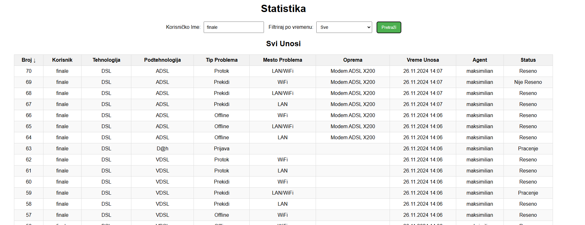

What I've Built

Orion Data Management System
Full-stack ISP technical issue tracking system with multi-level cascading forms, AJAX-driven dynamic menus, admin dashboard, real-time stats/reporting, and role-based authentication. Deployed on AWS Linux VPS.

Virtual Greenhouse
Responsive educational website showcasing 5 exotic plant species with a hero slider, dropdown navigation, detailed plant info cards, and social media integration. Pure HTML/CSS front-end work.

Brute Force Vulnerability Assessment
Bachelor's thesis — in-depth vulnerability analysis of device exposure to brute force attacks using Kali Linux. Covers attack classification, password entropy math, and countermeasures including 2FA, lockouts, and CAPTCHA.
lab.local · always-on
Advanced Home Lab
Private enterprise simulation for white-hat security testing and CCNA preparation. Configured isolated VLANs, VPN nodes, and VMware-based server clusters. Includes automation scripting and network monitoring tools.